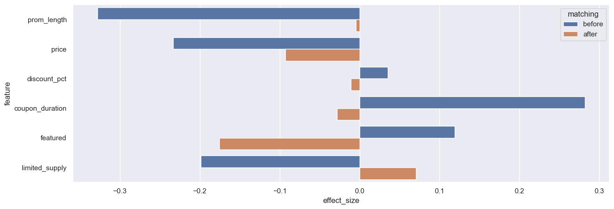
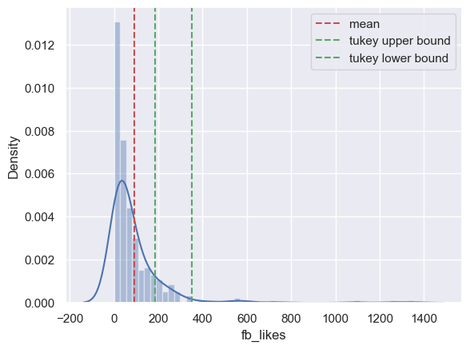

What features to select: As we will illustrate later, the following features/variables should be excluded:
df = pd.read_csv('./data/groupon.csv')
df.info()
fig, ax = plt.subplots(figsize=(15, 5))
ax = sns.barplot(data=all_stats_df, x='effect_size', y='feature', hue='matching', orient='h')

fig, ax = plt.subplots(figsize=(15, 5))
ax = sns.barplot(data=all_stats_df, x='log_P', y='feature', hue='matching', orient='h')
ax.set_xlabel('-log(P-value) of t-test between control and treatment groups')
ax.axvline(x=-np.log10(0.05), color='r', linestyle='--', label='alpha = -np.log10(0.05)')
ax.legend()

col = 'quantity_sold'
ax = sns.distplot(matched_df[col])
iqr = np.percentile(matched_df[col], 75) - np.percentile(matched_df[col], 25)
upper_bound = np.percentile(matched_df[col], 75) + 3.0 * iqr
lower_bound = np.percentile(matched_df[col], 75) + 1.0 * iqr
ax.axvline(x=np.mean(matched_df[col]), color='r', linestyle='--', label='mean')
ax.axvline(x=upper_bound, color='g', linestyle='--', label='tukey upper bound')
ax.axvline(x=lower_bound, color='g', linestyle='--', label='tukey lower bound')
ax.legend()